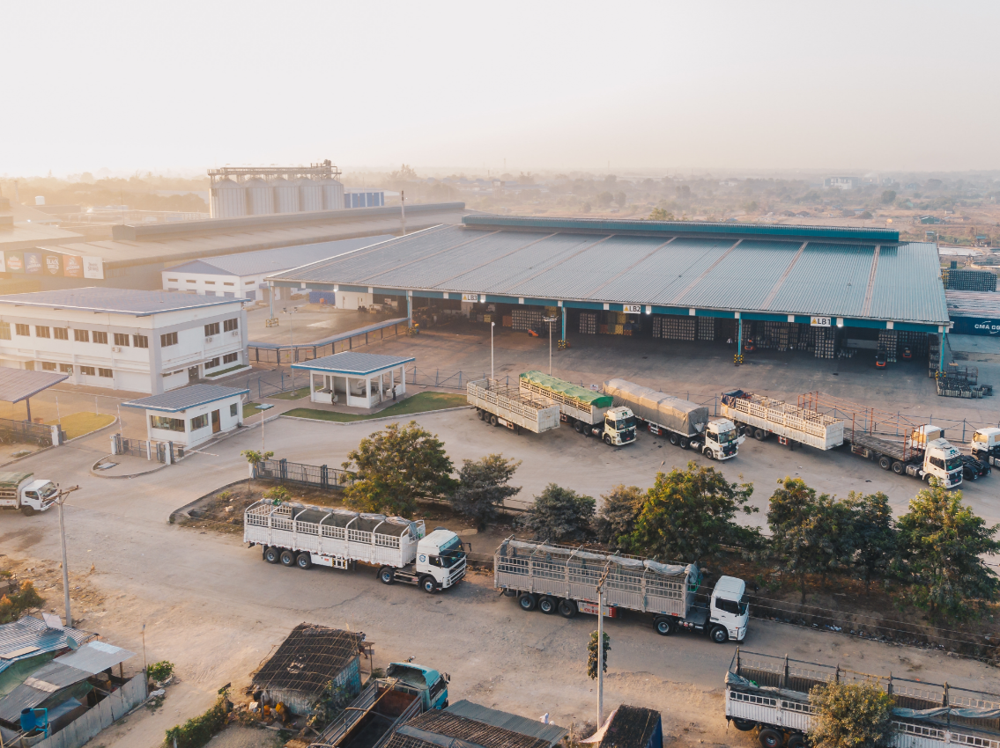

INDIAN TRUCK DRIVERS ARE IMPORTANT TO THE ECONOMY. BUT ARE THEY HAPPY WITH THEIR JOBS?
15% of our Nation’s economy runs on the heartbeat of our Indian truck drivers. Yet, they feel apprehensive about their jobs. Trucking is vital to the economy of the country. Drivers are in charge of delivering 70% of all goods in India. Trucks provide medicine, food, raw materials, and other necessities to 80% of our communities. Many of us would be unable to receive our needs or go about our daily lives without continuous deliveries from trucks crossing state and country borders. Major businesses such as construction, healthcare, and utilities rely on truck drivers' behind-the-scenes activities.

WHY TRUCK DRIVERS ARE ESSENTIAL TO THE ECONOMY
Transport essential goods all over the country:
Truck drivers are responsible for the safety and on-time delivery of
shipments to our supermarket stores. The oil and gas sectors rely on
truck drivers to transfer fuel safely. Truck drivers have the
knowledge and experience to ensure that gasoline reaches customers
safely.
Drivers also transport medications and medical equipment to
hospitals. Healthcare providers would be unable to care for patients
and preserve lives if essential medical items were unavailable.
Connect Businesses:
.png)
Because of truck drivers' time management and safe driving skills, businesses can obtain products from anywhere in the world. They are familiar with the best routes and have a system to ensure that the supplies exchanged between firms are satisfied, allowing partnerships to develop. Companies can focus on the internal labor required to expand their operations instead of worrying about logistics
Help to build Infrastructure:

Truck drivers transport the supplies, materials, and equipment required to complete construction projects such as roads, buildings, tunnels, and bridges. This vital position promotes community growth and, in the event of a natural disaster, aids in the rehabilitation of buildings. These infrastructures must also be maintained. Delivering lumber, steel, and concrete contributes to the strength of foundations and structural integrity.
Provide help in Emergencies:

Truck deliveries provide emergency supplies to hospitals and first responders. That is why Indian Truck drivers are regarded as critical on the frontlines, particularly during the peak of the COVID-19 outbreak. Many lives would have been lost if they had not made regular deliveries on time.
Why Truck Drivers Are Dissatisfied About Their Job In India
Unknown to us, they drive around rolling the economy without recognition and dignity. After Agriculture, the Sector which has generated the maximum employment in India is the Transport Sector. Indian Truck drivers play a major role in our transportation.
Unusually long working hours, long periods away from home and family, and difficult road and driving conditions all emerged as issues impacting their health and well-being. Half of the Indian truck drivers have trips with over 12 hours, and 46 percent drive continuously for over six hours with no break.
“According to a survey on Indian truck drivers’ status, over-speeding was cited as the leading reason for road accidents by truckers as of February 2020. Fatigue and sleepiness were cited as the second leading cause of road accidents among 38 percent of truck drivers in the South Asian country. These types of accidents create a huge problem for the drivers and single truck owners both financially and mentally.”
The truck is indeed their home, sheltering them while on the road. They sleep in, under, and even on top of it. Truck drivers spend several days on the road and are away from home and family for extended periods. At the same time, drivers are usually asked to perform 10- to 12-hour shifts to complete deliveries on schedule.
According to the report by TIMES OF INDIA,the Indian trucking industry has around 90 lakh vehicles on the road, which along with new additions, need around nine lakh new truck drivers every year. Although this number is growing, on the contrary, the number of people opting for commercial truck driving as a career or profession is dropping rapidly. Consequently, about 40 % of total truck and goods transport vehicles remain idle on any given day.
Truck drivers have a high rate of occupation-related injury and have
among the highest rates of on-job fatality, yet, for 63% of the
truck drivers, health does not feature amongst their top three
priorities in life, as per the survey.
While the trucking industry plays an integral role in driving the
growth of India, the stressful and demanding nature of the work done
by truck drivers impacts their physical and mental well-being.
Therefore, Truck drivers today are dissatisfied with their jobs.
CONCLUSION:
Truck Driving in Inia, which seems to be more of a compulsion than a Passion, needs to evolve. RIYO’s initiative is to attract more skilled drivers and grant them a smart income, more respect, a better social structure, and support from the industry. Truck driving may not be the most appealing profession. Still, with good benefits, income, and various other benefits offered by RIYO, it can be a strong choice for anyone searching for a secure and satisfying career as an Indian Truck driver.